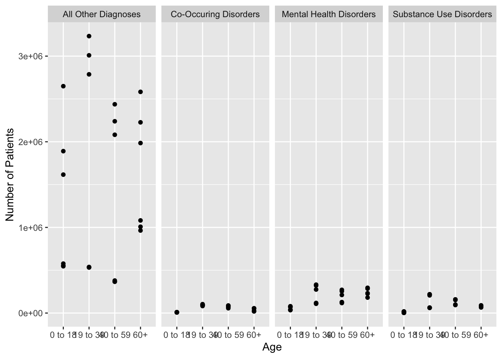
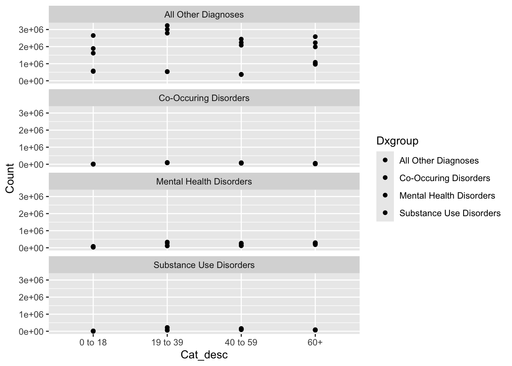
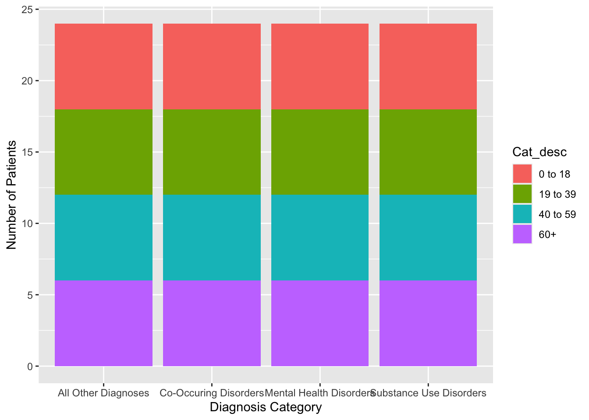

In this portfolio piece I will be examining more closely the data from the previous data set. For this section I am focused on inquiring about the relationship between the category of the patient and what type of diagnosis they received after a hospital visit.
library(tidyverse)
#devtools::install_github("rstudio-education/dsbox")
library(dsbox)
library(haven)
Hospital1 <- read_sav("Hospital1.sav")
#View(Hospital1) For this analysis I will be examining the age range of the patient and their specific diagnosis. First I will look at the preview of my variables:
Hospital1 %>%
select(Category, Cat_desc, Dxgroup)## # A tibble: 522 × 3
## Category Cat_desc Dxgroup
## <chr> <chr> <chr>
## 1 DX Category All Discharges All Other Diagnoses
## 2 DX Category All Discharges Co-Occuring Disorders
## 3 DX Category All Discharges Mental Health Disorders
## 4 DX Category All Discharges Substance Use Disorders
## 5 Sex Female All Other Diagnoses
## 6 Sex Female Co-Occuring Disorders
## 7 Sex Female Mental Health Disorders
## 8 Sex Female Substance Use Disorders
## 9 Sex Male All Other Diagnoses
## 10 Sex Male Co-Occuring Disorders
## # ℹ 512 more rowsIn order to grab my variables I will have to look specifically at the columns “Cat_desc”, “Dxgroup”, “Count”, and “Category” to create a subset of the data that includes only age, and not including race, payer, and sex. I will then plot this data.
Hage <- Hospital1[, c("Category", "Cat_desc", "Dxgroup", "Count")]
Age <- Hage %>% filter(Category == "Age")
Age %>% ggplot(mapping = aes(x= Cat_desc, y = Count)) + xlab( "Age") + geom_point() + facet_grid(~ Dxgroup) + ylab("Number of Patients") 
This plot is not very representative of the nuances of the data and the azis axis is unclear, so I will try faceting with the categorical variable of “Dxgroup”
Age %>% ggplot(mapping = aes(x= Cat_desc, y = Count, fill = Dxgroup)) + geom_point() + facet_wrap(~ Dxgroup, nrow = 4)
This new graph is more organized by diagnosis group so that I can clearly visualize where might an age range fall within a diagnosis. However, graphing using points is not helpful in clearly indicating the spread as the data. Next, I will use a bar chart to visualize this data more clearly.
Age %>% ggplot(mapping = aes(x=Dxgroup, fill= Cat_desc)) + geom_bar() + xlab("Diagnosis Category") + ylab("Number of Patients")
After trying out the bar plot I believe the underlying issue in trying to visualize the data is due to the original data set itself. The way the data in the Hospital file is organized is that specific age ranges are in the rows and not columns. After going through this process and understanding the data more, I realize I need to expend more energy first by manipulating the data set. The reason for this is so that specific age range columns map to rows of data such as a patients diagnosis; in doing that manipulation I would then be able to see the relationship between age range and diagnosis. I will try to solve this issue in the next portfolio piece.